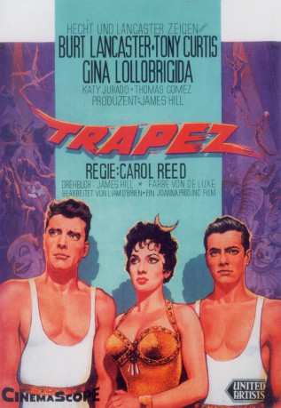

#8818 Trapez
Alternativ: Trapeze
 
 IMDB-Wertung: 6.9 / 10
IMDB-Wertung: 6.9 / 10  Metascore: 0
Metascore: 0 
Ein schwerer Unfall hat die Karriere des Luftakrobaten Mike beendet. Im Zirkus eines alten Freundes findet er neue Arbeit. Dort soll er dem jungen Tino den dreifachen Salto beibringen und als Fänger arbeiten. Bald begeistert die neue Nummer das Publikum. Doch die schöne Artistin Lola drängt sich zwischen die Männer.
Jahr: 1956
Dauer: 106 Minuten
FSK: 12
Land: USA Studio: United ArtistsTonspuren: DTS - ,
Untertitel:
Auflösung: 1080p (1920x816) Größe: 8130 MB
Genre: Drama, Liebe
Regisseur: Carol Reed
Drehbuch: Max Catto
Soundtrack: Malcolm Arnold
Darsteller:
 Burt Lancaster als Mike Ribble
Burt Lancaster als Mike Ribble Tony Curtis als Tino Orsini
Tony Curtis als Tino Orsini- Gina Lollobrigida als Lola
- Katy Jurado als Rosa O'Flynn
 Thomas Gomez als Bouglione
Thomas Gomez als Bouglione- Minor Watson als John Ringling North
 Sidney James als Snake Charmer
Sidney James als Snake Charmer- Gamil Ratib als Stefan
- Edward Hagopian als 3rd partner of Lola
- Roland Carey als Trapeze Artist (uncredited)
- Guy Provost als Journalist (uncredited)
- Johnny Puleo als Max
- Gérard Landry als Chikki
- Jean-Pierre Kérien als Otto
- Gimma Boys als Circus Family Children
- Los Arriolas als Specialty Act
- Pierre Tabard als Paul
- Serge Bento als Circus boy / A Journalist (uncredited)
- Paul Bonifas als Paul - Circus Peddler (uncredited)
- Mme Felco Cipriano als Mme. Felco Cipriano (uncredited)
- Betty Codreano als Betty Codreano (uncredited)
- Henri Coutet als Circus Electrician (uncredited)
- Hubert de Lapparent als Photograph (uncredited)
- Lucien Desagneaux als Circus Artist (uncredited)
- Paul Faivre als Bartender (uncredited)
- Gabrielle Fontan als Old Woman (uncredited)
- Édouard Francomme als Circus Electrician (uncredited)
- Willy Krause als Minor Role (uncredited)
- Sylvain Levignac als Spectator in Line (uncredited)
- Rico Lopez als Circus Boy (uncredited)
- Sally Marlowe als Minor Role (uncredited)
- Mylos als Mylos (uncredited)
- Michel Thomass als Ringmaster (uncredited)
- Edward Ward als Minor Role (uncredited)
- Joe Warfield als Photograph (uncredited)
- Achille Zavatta als Achille Zavatta (uncredited)
Datei: X:\1950-1959\Trapez (1956, FSK12, 1920x816).mkv seit 30.04.2018
Festplatte: HD 1900-1970
 Es gibt insgesamt 141 Filme in der Gruppe '1950-1959'
Es gibt insgesamt 141 Filme in der Gruppe '1950-1959'